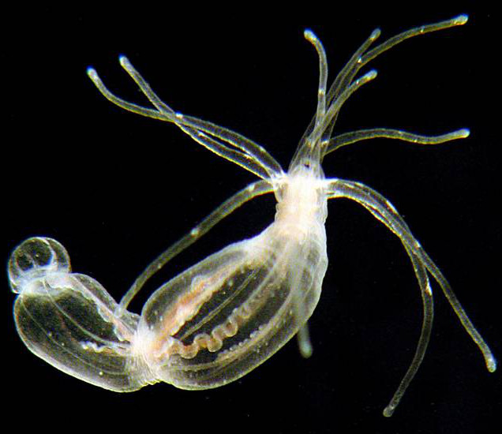

Organ research centre to be launched at Bar-Ilan University
National centre draws inspiration from the ocean depths for new insights into organ repair (SEE ORIGINAL)

The Nematostella sea anemone could help scientists in organ repair research (Photo: Courtesy)
The Hebrew University announced Sunday the establishment of a major new national interdisciplinary center for the study of the Nematostella (sea anemone) and organ rehabilitation research.
The main aim of the center will be to achieve a deeper understanding of how the sea anemone has developed its unique ability to regenerate its organs, and gain an insight into the functioning of the animal’s general injury repair processes, according to the Hebrew University’s press release. It is thought that this knowledge will be directly applicable to the study of organ repair in humans and the process by which our wounds heal.
Dr. Uri Gat of the Alexander Silberman Institute of Life Sciences at the Hebrew University said that while the Nematostella is a very simple, ancient life form, it is also highly rich in genes, many of which constitute earlier versions of parallel genes in humans.
The sea anemone, one of the world’s most ancient life forms, could provide important insights into the human nervous system (photo credit: Courtesy Hebrew University)
Gat explained that Cnidarian life forms, such as sea anemones, corals, jellyfish and hydra, developed one of the first nervous systems in the natural world. “If we learn how the nervous system was created and how it functions we could have new tools for researching and understanding the nervous system in humans.”
The national Nematostella Research Center is set to be one of the first of its kind, incorporating departments from three universities: the Institute of Life Sciences at Hebrew University, the School of Marine Sciences at the University of Haifa, and the Laboratory for Molecular Marine Biology at Bar-Ilan University. The center’s headquarters will be based at Bar-Ilan due to its central geographic location.
Dov Smith from the Hebrew University’s Press Liaison Office told The Times of Israel that the majority of funding for the center will come from the Science and Technology Ministry, while Bar-Ilan will also contribute to the initial establishment costs.
Dr. Oren Levy, director of the Laboratory for Molecular Marine Ecology at Bar-Ilan University, believes that cooperation between academics across a number of fields will enable better resource sharing and research.
“In many parts of the world there are modern centers which offer research scientists state-of-the-art equipment, space and knowledge to enable breakthroughs. We are proud to be involved in the creation of such a center here,” said Dr. Levy. “Without a doubt, in this way we can advance science in Israel.”